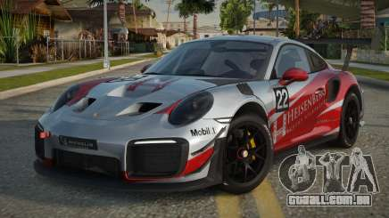
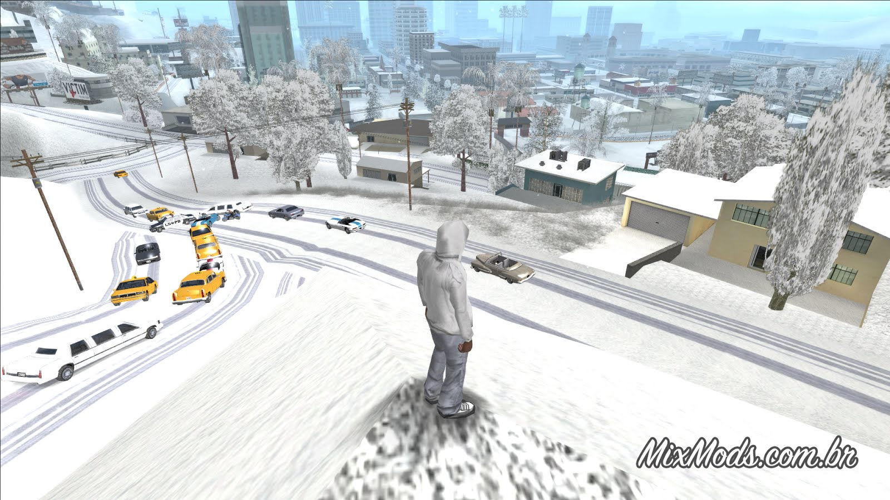

Posts sobre Mods
Mod de Carro Esportivo
Este mod adiciona um porshe no lugar do comet ao GTA SA. Ele foi testado no SA-MP e funciona normalmente.
Download download do mod
Mod de HUD Personalizado
um mod de uma sniper, se encaixa bem na mao do personagem e tem uma boa mira.

Mod de Mapa
Este mod transforma o mapa em ambiente com neve.
